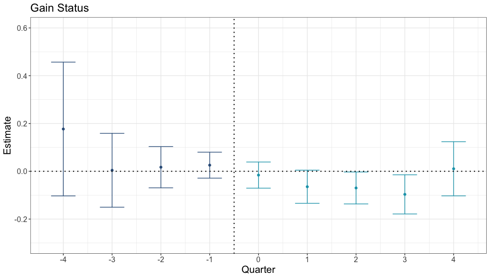
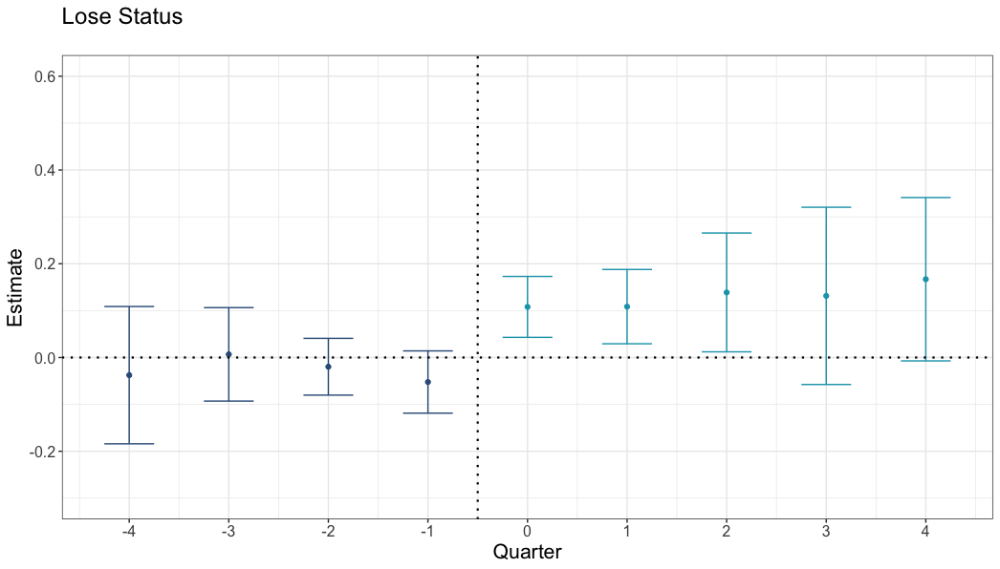

Case Study: Airbnb Superhost Status Influences Consumers’ Ratings
Situation
Many platforms present signals of quality to customers. Among the most popular are consumer-generated ratings (e.g., star ratings). However, there are very basic unanswered questions about these ratings:
- What do star ratings actually measure?
- Objective quality?
- Value for price?
- Performance vs expectations?
- How do star ratings interact with other signals of quality?
- E.g., “Superhost” status on Airbnb.com
Research Objective
Does Airbnb’s Superhost status influence listings’ ratings?
Signals of quality are presented in order to increase customers’ expectations. Superhost status exists to make listings appealing.
However, consumers’ post-experience ratings may depend on those prior expectations. A star rating is not an objective measure—it depends on what you compare your experience to.
Therefore, we explore whether gaining Superhost status decreases star ratings (and losing status increases ratings)—a downside to a well-meaning signal.
Data
- 1.5M+ individual Airbnb ratings and reviews
- Scraped from Airbnb.com using Python
- Includes ratings, text review, author ID, date
- Quarterly observations of listing information
- Collected from InsideAirbnb
- Includes Superhost status, price, amenities, etc.
- 500k+ Vrbo.com ratings, reviews, and listing observations
- Scraped from Vrbo.com using Python
- Includes listing titles, host names, amenities, ratings, text review, author ID, date
Method
Main analysis:
- Staggered difference-in-differences regression analysis of Airbnb listings that change status to themselves on Vrbo over time (when they are vs are not Superhosts).
Comparing listings to themselves on a different platform provides strong causal inference:
- Only considering listings that change status means we are not confounding status with stable differences in quality between listings
- Staggered difference-in-differences means that Superhost status changes at different times for different listings. Therefore, change is not confounded with market trends.
- Comparing ratings on Airbnb to Vrbo for the same listings controls for potential changes in listings over time (e.g., if hosts drop amenities once they reach Superhost status, or become burned out).
Main difficulty:
- There is no unique identifier between Airbnb and Vrbo for properties that are cross-listed (available on both sites). We first attempted Random Forest and XGBoost methods to match listings across platforms. However, the cost to have humans manually code a test set was prohibitive.
- Solution: Wrote a simple matching algorithm.
- Matched listings across platforms with nearby latitude/longitude.
- Narrowed to ±2 guests accommodated (platforms count beds differently).
- Narrowed based on listing name and host name partial and full matches.
Results:
Plot: Estimated difference in each quarter in ratings between Airbnb and Vrbo, compared to the difference when status changed1
If Superhost status did not affect ratings, we would see the light blue dots (right side) to be at zero. Instead, when listings gain status, their ratings are lower on Airbnb than on Vrbo:
Differences in ratings: Airbnb listings that gain Superhost status (vs same properties on Vrbo)

And, when listings lose status, their ratings are higher on Airbnb than on Vrbo:
Differences in ratings: Airbnb listings that lose Superhost status (vs same properties on Vrbo)

Results:
What if different people stay at Superhosts?
- If those who stay at Superhosts are grumpier/more discerning, they should give lower ratings.
- This would create the pattern of results we see.
Airbnb ratings contain guest IDs.2
- We analyze the effect of Superhost status on Airbnb ratings after removing differences between reviewers.
- We found the same result:
- After removing differences between reviewers, listings receive lower ratings during the time when they are Superhosts than when they are not.
Follow-Up Experiments
- 500 participants chose between pairs of listings:
- Superhost + lower rating
- Non-Superhost + higher rating
- Repeated four times for each participant
Higher ratings led to a 52% increase in choice:
- 55% preferred the higher-rated Non-Superhost
- 36% preferred the lower-rated Superhost
- 9% had no preference
Takeaways
Superhost → Rating Drop
- Statistically significant decline after gaining Superhost status
- Larger statistically significant increase after losing Superhost status
Superhost status influences expectations without changing quality, so the same experience feels worse from a Superhost.
Customers Don’t Adjust When Choosing
- 55% chose non-superhost listings that had higher ratings
Why? Customers are used to using ratings to make choices—to compare options. They do it everywhere. They feel they can discern between a 4.80- and 4.65-star property. But it is hard to map Superhost status onto a rating—customers do not know how to handle different status and different ratings simultaneously.
Implications
For Consumers:
- Be cautious—lower ratings on “certified” listings may reflect higher expectations, not lower quality.
For Platforms:
- Every piece of information exists in relation to other information.
- One thing used to increase expectations (and choice) may negatively impact ratings (and choice).
- Be conscious of the tradeoff for choice—Superhost status increases choice on aggregate because customers can filter by it. But Superhost status is probably not as effective as it could be, as is.
Links & Resources
- Full Academic Paper: Journal of Consumer Research (open access)
- Blog Summary: mattmeister.com
- All Code, Data, and Materials: Open Science Framework